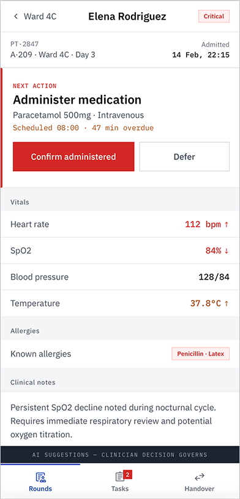
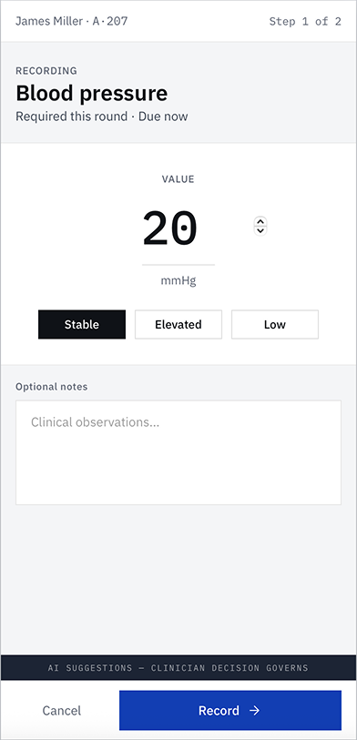
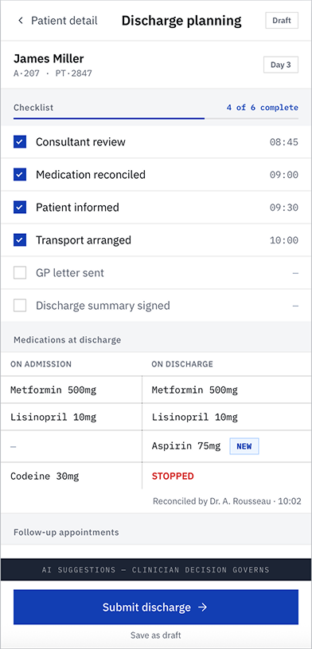
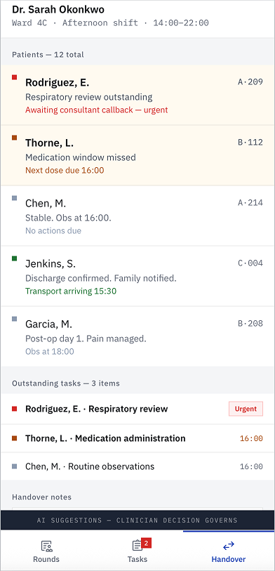

A digital system that clinicians had voted against — with their feet.
The client had a digital clinical system. The problem: medical staff had quietly abandoned it, keeping paper backups and re-entering everything later. The digital tool had become overhead, not support.
As the agency's first designer, I led contextual research, information architecture, and interface design — on a project where data sensitivity and GDPR were non-negotiable.
Clinical data sensitivity, GDPR compliance, and a multi-role system spanning patients, clinicians, and administrative staff.
Not "how do we make the UI nicer?" — but "why does paper still win?"
Paper backups, double entry, and errors born of context-switching.
The digital system mirrored the hospital's administrative org chart, not the way care actually happens. Clinicians jumped between disconnected screens mid-task, so they fell back to paper in the moment and re-entered data later — a workaround that doubled effort and introduced transcription errors.
I shadowed nurses and doctors across three full shifts.
Contextual inquiry on the ward — shadowing clinical staff across three complete shifts — surfaced the truth no survey would: where paper appeared, why it appeared, and what the digital system made impossible in the moment of care.
Paper appeared at the bedside
The digital system couldn't keep pace with care in motion, so staff captured on paper and transcribed later.
Double entry was the norm, not the exception
Every paper note became a second, later data-entry task — doubling effort and inviting transcription error.
The IA mirrored the org, not the patient
Information was filed by department, forcing clinicians to reassemble a patient's story from scattered screens.
Redesign the architecture around the patient journey.
I reframed the brief from "improve the UI" to "redesign the information architecture around the patient journey, not the admin org chart." Lean UX iteration then eliminated the redundant screens that the old structure had required.
A patient's story scattered across departments.
Fig. 02 — Reframing the IA: from departments to the patient's path
Every screen leads with the decision, not the data.
Each surface in the journey was built for the high-pressure clinical moment: a clear hierarchy that puts the time-critical action first, with supporting detail one deliberate step away. The patient view opens on the single next action — what to do, the drug, the dose, how overdue — above the vitals and notes that justify it.

L'action suivante est l'élément le plus visible de l'écran ; constantes, allergies et notes cliniques sont présentes mais discrètes, prêtes quand le clinicien veut justifier sa décision.">The riskiest patient on the round is one tap from a committed action. Next action is the loudest thing on the screen; vitals, allergies and clinical notes are present but quiet, ready when the clinician wants to justify the call.
Critical values inherit the same status language as the round list — red carries deterioration everywhere, so a number means the same thing on every screen.
One per screen, always an explicit verb
Suggests; the clinician decision governs
Fig. 03 — Patient detail: the decision first, the evidence one deliberate step below
Capture happens where care happens — so paper never has to.
The original system failed because recording lived back at the desk, so staff wrote on paper at the bedside and transcribed later. Here, each stage of the patient's path — record, discharge, handover — is a first-class screen built to be completed in the moment, in seconds, with one thumb.

A reading is a stepper and three states — captured in seconds, the moment it's taken. No second desk-side entry, no transcription error.

A live checklist and a clear admission-vs-discharge medication diff make the riskiest moment in the stay legible and reconciled.

The shift packages itself: who's outstanding, what's urgent, what the next clinician must chase — assembled from the day, not retyped.
Fig. 04 — Record, discharge, handover: one continuous system that matches the rhythm of the ward
The paper disappeared — because it was no longer needed.
When the system finally matched how care happens, staff adopted it fully and the paper backups stopped — eliminating double entry and reducing administrative processing time.
digital workflow
remaining
processing time